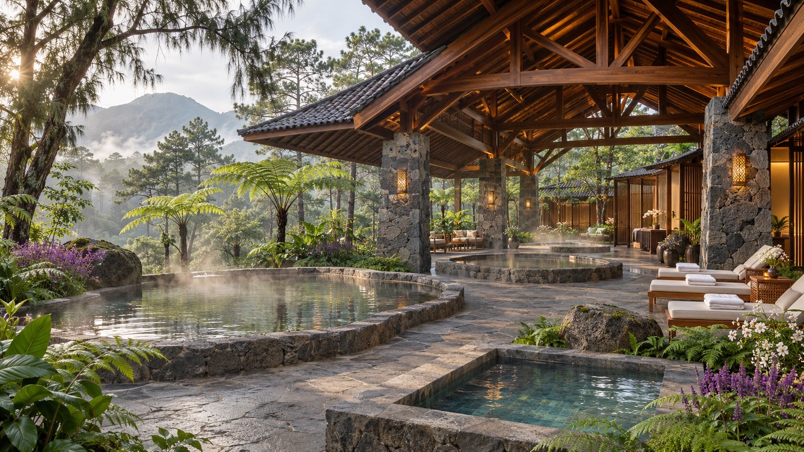

Warmth & contrast
Warm soaking pools, cool plunges, steam rooms and places to rest between experiences.

Wellness / The Mountain Baths
A sanctuary of bathing, quiet gardens and restorative rituals.
A destination for a deeper pause
The Mountain Baths are envisioned as a substantial sanctuary within Mount Paradise. Sheltered pools, treatment spaces and quiet resting terraces bring the landscape into a slower rhythm, away from the activity of the Main Lodge.
Warm soaking pools, cool plunges, steam rooms and places to rest between experiences.
Private treatment rooms and calming rituals, with space to linger afterwards.
Sheltered loungers, woodland views and the simple pleasure of doing very little.
The mountain water story
Mountain spring water reaches the property through the surrounding landscape. This connection to water inspires the bathing sanctuary and the wider garden vision: stone, shade, flowing water, and time outdoors.
Our ambition is a place where a visit to the baths becomes a reason to return to the mountain.

Indoor fitness / The Main Lodge
A dedicated indoor gym brings together cardio, strength training and room for movement. Large windows keep the woodland in view while the equipment and training spaces remain fully indoors.
Explore club membershipOutdoors, at your pace
A generous swimming pool and tiled lounging terraces at the Main Lodge.
A dedicated court setting with room around the playing surface and its own approach.
Garden paths and a proposed arboretum bring discovery into everyday movement.
Your next chapter
Ask about the wellness vision, future experiences or 800 Club membership.